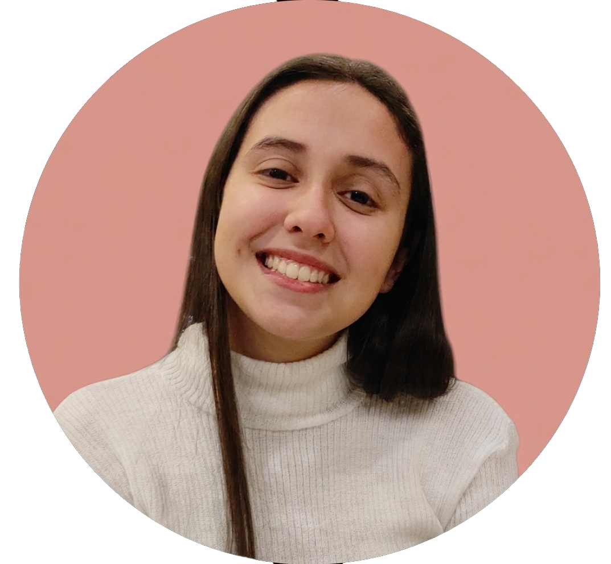

Aptitudes
- Creatividad
- Adaptabilidad
- Compromiso

Estudiante de Diseño Gráfico con experiencia en Branding, Fotografia y Creación de contenido para redes sociales. Me encuentro capacitada para cualquier proyecto que requiera de creatividad como campañas y redes sociales. Cuento con conocimientos en manejo de redes sociales como Community Manager y en Fotografía Deportiva.
candelavazquez221@gmail.com